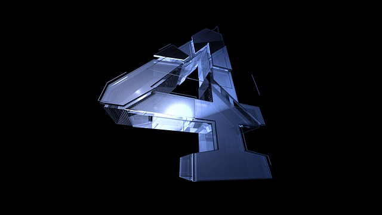

box-reflect
box-reflect：none | direction offset? mask-box-image?
box-reflect：none | direction: 此值表示box-reflect生成倒影的方向，主要包括以下几个值:
above: 表示生成的倒影在对象（原图）的上方;
below: 表示生成的倒影在对象（原图）的下方
left: 表示生成的倒影在对象 (原图) 的左侧;
right: 表示生成的倒影在对象 (原图) 的右侧;
offset: 用来设置生成倒影与对象（原图）之间的间距，其取值可以是固定的像素值，也可以是百分比值，如：
: 使用长度值来设置生成的倒影与原图之间的间距，只要是 CSS 中的长度单位都可以，此值可以使用负值；
: 使用百分比来设置生成的倒影与原图之间的间距，此值也可以使用负值
mask-box-image: 用来设置倒影的遮罩效果，可以是背景图片，也可以是渐变生成的背景图像
